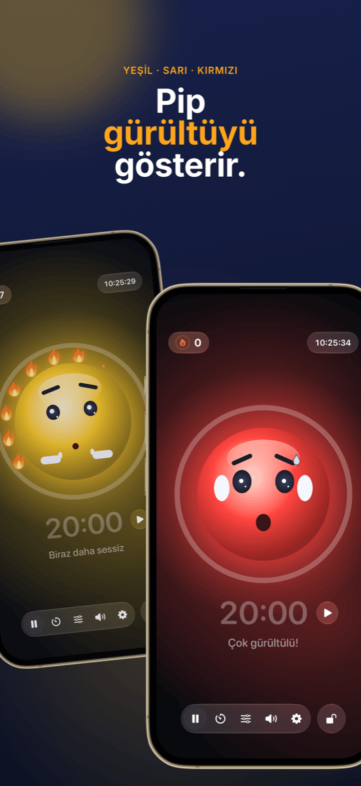

Sınıf yönetimi: oturma düzeni, gruplar ve gürültü kontrol altında
İyi bir sınıf yönetimi neredeyse hiç fark edilmez ve amacı da tam olarak budur: Ders akar, geçişler sorunsuz olur ve zaman uyarılara değil öğrenmeye gider. Neredeyse her derste üç soru yeniden gündeme gelir: Kim nerede oturuyor? Kim kiminle çalışıyor? Ve şu anda ne kadar ses olabilir? Bu rehber, bu üç soruyu sorun hâline gelmeden yanıtlayan bir yöntem gösteriyor.
Sınıf yönetimi aslında ne demek
Sınıf yönetimi disiplinden fazlasıdır. ABD’li psikolog Jacob Kounin daha 1970’lerde, başarılı öğretmenlerin rahatsızlıklara nasıl tepki verdikleriyle değil, onları ne kadar iyi önledikleriyle ayrıştığını gösterdi. Tanımladığı özellikler arasında şunlar var:
- Her yerde olma: Sınıf, tüm odayı gözünün önünde tuttuğunu hisseder.
- Akıcılık ve tempo: Aşamalar arası geçişler dakikalar sürmez ve ders hızını kaybetmez.
- Grubu harekete geçirme: Sadece söz alan değil, herkes derse katılmaya devam eder.
Bunun büyük kısmı tutum ve deneyimdir. Ama bir kısmı yalnızca organizasyondur ve önceden hazırlanabilir. Aşağıdaki yöntem tam da burada devreye girer.
Adım 1 · Bir kez, öncedenSınıf listesini bir kez oluştur, her yerde kullan
En büyük zaman kaybı aynı işi iki kez yapmaktır. Sınıf listesini Excel, Numbers veya Google E-Tablolar’dan bir kez CSV olarak dışa aktar. Hem Platzwahl hem de Team Zufall bu dosyayı doğrudan içe aktarır ve tüm sınıf saniyeler içinde hazır olur. İki uygulama da isimleri yalnızca cihazda saklar; hesap da bulut da yoktur. Öğrenci verilerinde bu bir ayrıntı değil, bir ön koşuldur.
Adım 2 · TemelOturma planı: Rahatsızlıkları başlamadan önle
Oturma düzeni, sınıf yönetiminin en etkili aracıdır; çünkü sen tek kelime etmeden her dakika işler. Kimin kimin yanında oturduğu; konuşmayı, dikkat dağınıklığını ve odaklanmayı belirler. İşe yarayanlar:
- Huzursuz öğrencileri ayır; sadece yan yana değil, arka arkaya da.
- Yakınlıktan yararlan: Desteğe ihtiyaç duyan ya da kolay dağılan öğrenciler doğrudan görüş alanında otursun.
- Sakin çapaları daha hareketli öğrencilerin arasına yerleştir.
- Düzenli olarak değiştir; örneğin tatillerden sonra ya da her ay, böylece kalıcı sorunlu köşeler oluşmaz.
Platzwahl ile bu kuralları her öğrenci için belirlersin (rahatsız etme eğilimi, ön sıra, istenen sıra arkadaşları, ayırmalar) ve oturma planı otomatik olarak hesaplanır. Bir puan, tüm kurallara ne kadar uyulduğunu gösterir. Hazır plan PDF olarak masana gelir.
 Adım 3 · İş birliği aşamaları
Adım 3 · İş birliği aşamaları
Tartışmasız, adil gruplar
“Grupları biz seçebilir miyiz?” sorusu, birçok grup çalışmasını daha başlamadan kaybettirir. Serbest seçim zaman alır, grupçukları pekiştirir ve hep aynı öğrencileri dışarıda bırakır. Hedefli dağıtım adildir ama zahmetlidir ve on dakikalık bir ikili çalışma için pek değmez.
Pek çok kısa aşama için en iyi çözüm rastgeleliktir: Hızlıdır, kimse kayrıldığını hissetmez ve sınıf herkesle çalışmayı öğrenir. Önemli olan kuranın görünür olmasıdır. Sınıf, isimlerin projeksiyonda karıştırıldığını gördüğünde tartışacak bir şey kalmaz.
Team Zufall’da takım sayısını seçer, gelmeyenleri tek dokunuşla çıkarır ve kurayı çekersin. Takımlar büyük olarak duvara yansıtılabilir ya da PDF olarak dışa aktarılabilir. Belirli eşleşmelerden kaçınılması gereken uzun projelerde ise hedefli dağıtım daha iyi bir seçenek olmaya devam eder.
 Adım 4 · Çalışma aşaması
Adım 4 · Çalışma aşaması
Sürekli susturmak yerine gürültüyü görünür kıl
Grup çalışması gürültülüdür ve bu normaldir. Sorun, kimse ne kadarının fazla olduğunu bilmediğinde ve sen dersi “Şşş!” diyerek geçirdiğinde başlar. Uyarılar çabucak etkisini yitirir ve tam da odaklanmış çalışanları böler.
Üç şey daha iyi işler:
- Ses seviyesinde anlaşın: Hangi aşamada neyin geçerli olduğunu sınıfla birlikte belirleyin. Bireysel çalışmada fısıltı, grup çalışmasında ikili konuşma sesi.
- Ses seviyesini göster: Projeksiyondaki bir gürültü ışığı, sınıfa normalde senin yüksek sesle vermen gereken geri bildirimi verir.
- Gürültüyü cezalandırmak yerine sessizliği ödüllendir: Işık yalnızca kırmızıya dönüp bir şeyleri elinden alıyorsa kısa sürede baskı aracına dönüşür ve birkaç gürültücü öğrenci sınıfın günah keçisi olur. Sınıfın ulaşabileceği ortak bir hedef daha iyi işler.
Ruhe tam olarak bunun için yapıldı: Bir maskot yeşil, sarı ya da kırmızı gösterir ve ortam sakin kaldıkça alevler birer birer yanar. On iki alev tam bir çelenk oluşturur ve bu kutlanır. Sarı ve kırmızı eşiklerini aşamaya göre ayarlarsın ya da Ruhe’nin kendini kalibre etmesine izin verirsin. Bir zamanlayıcı kalan süreyi gösterir, projeksiyon görünümü her şeyi büyük olarak duvara taşır ve kontroller iPad’inde kalır. Ruhe yalnızca ses seviyesini ölçer; hiçbir şey kaydedilmez.

Adım 5 · KapanışBaşarıları görünür kıl
Dersin sonunda önemli olan neyin işe yaradığıdır. Tam bir alev çelengi, tüm sınıfı kısaca övmek için iyi bir fırsattır. Bugün olmadıysa da, suçlu aramadan nedenini birlikte düşünmek için bir fırsattır. Belirli sıralarda tekrar eden sorunlar, yeni bir oturma planının zamanının geldiğine işaret eder.
Bu yöntemle bir ders nasıl geçer
| Aşama | Ne olur | Araç |
|---|---|---|
| Ders öncesi | Oturma planı hazırdır, herkes nerede oturacağını bilir. Yer kapma telaşı yok. | Platzwahl |
| Giriş | Sabit oturma düzeninde tüm sınıfla çalışma. | – |
| Geçiş | Takımlar projeksiyonda çekilir, gelmeyenler çıkarılmıştır. | Team Zufall |
| Çalışma aşaması | Gürültü ışığı ve zamanlayıcı projeksiyonda çalışır, sınıf alev toplar. | Ruhe |
| Toparlama | Sabit yerlere dönüş, alev çelengine kısa bir bakış. | Ruhe |
Sık sorulan sorular
Sınıf yönetimi ne demektir?
Sınıf yönetimi, ders süresinin olabildiğince büyük kısmının gerçekten öğrenme zamanı olması için öğretmenin yaptığı her şeyi kapsar: kurallar ve rutinler, sınıfın ve oturma düzeninin planlanması, akıcı geçişler ve tüm sınıfı göz önünde tutmak. Mesele rahatsızlıklara tepki vermekten çok, onların hiç ortaya çıkmamasını sağlamaktır.
Sınıf sürekli çok gürültülüyse ne işe yarar?
Önce hangi aşamada hangi ses seviyesine izin verildiğini sınıfla birlikte kararlaştır. Ardından sürekli uyarmak yerine ses seviyesini görünür kıl, örneğin projeksiyondaki bir gürültü ışığıyla. En etkilisi, yalnızca gürültüyü cezalandırmak yerine sakin aşamaları takdir etmektir.
Derste gürültü ışığı kullanmak mantıklı mı?
Evet, ceza aracı olarak değil ortak bir hedef olarak kullanılırsa. Eşikler aşamaya uygun olmalıdır: Grup çalışması bireysel çalışmadan daha gürültülü olabilir. Gürültüyü cezalandırmak yerine sessizliği ödüllendiren bir ışık, birkaç gürültücü öğrencinin sınıfın günah keçisi olmasını önler.
Gruplar rastgele mi yoksa hedefli mi oluşturulmalı?
İkisinin de yeri var. İkili veya grup hâlinde yapılan kısa ve sık aşamalar için rastgelelik idealdir: hızlı, adil ve kimin kiminle çalışacağı konusunda tartışmasız. Uzun projelerde veya hassas durumlarda hedefli dağıtım zahmetine değer. Oturma planının kendisi ise her zaman bilinçli olarak planlanmalıdır.